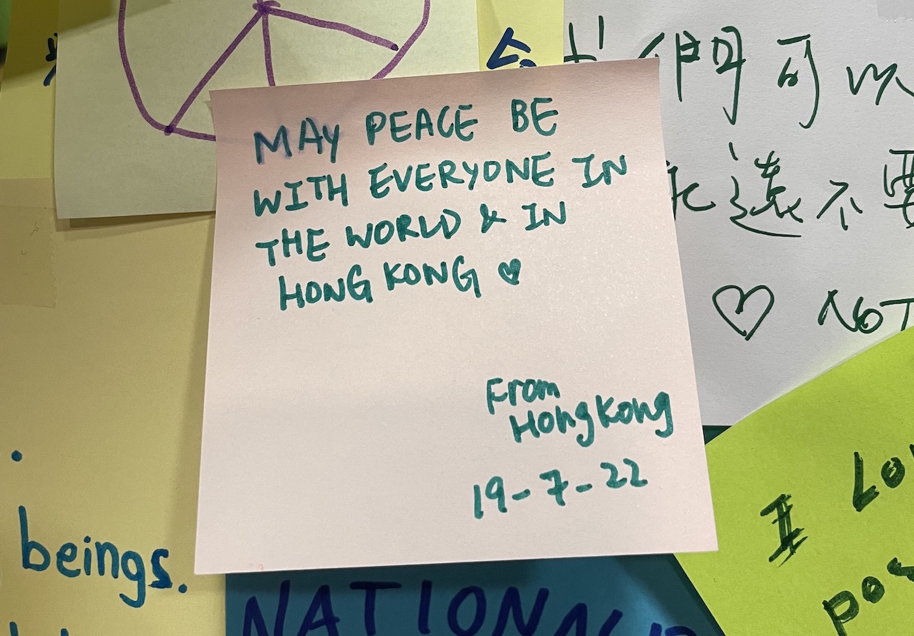

un digital orto. what will your verse be?
l’orto serve a me per raccogliere un po’ dei dati che creo e tenerli in un posto solo. qua i libri. qua tutto il resto delle robe che leggo. qua un po' di quote più o meno lunghe che mi sono piaciute. poi roba che vedo così so dove ritrovarla. in questa playlist quello che sto ascoltando ora.
baci,
g
6 aprile 2023
riorientamento: "What is to be done?" (V. Lenin)
14 marzo 2023
mille euro: ho dato duemila euro (mille miei, mille adam) all'idraulico. questi i pensieri razionali e irrazionali prima di sapere se/quanto la proprietaria pagherà.
16 gennaio 2023
going down the stairs when i had worked well, and that needed luck as well as discipline, was a wonderful feeling and i was free then to walk anywhere in paris.
Ernest Hemingway, A Moveable Feast
8 gennaio 2023
We cast this message into the cosmos [...]: This is a present from a small distant world, a token of our sounds, our science, our images, our music, our thoughts, and our feelings. We are attempting to survive our time so we may live into yours. We hope some day, having solved the problems we face, to join a community of galactic civilizations. This record represents our hope and our determination and our goodwill in a vast and awesome universe.
Jimmy Carter, Voyager Golden Record
28 dicembre 2022
 sentendomi festivo
10 dicembre 2022
Something about the interior life of a computer remains infinitely interesting to me; it’s not romantic, but it is a romance. You flip a bunch of microscopic switches really fast and culture pours out.
Paul Ford, Why I Still Love Tech
24 novembre 2022
qui sotto dove mi piacerebbe essere ora.
baci,
g
Dragon's Back, Hong Kong